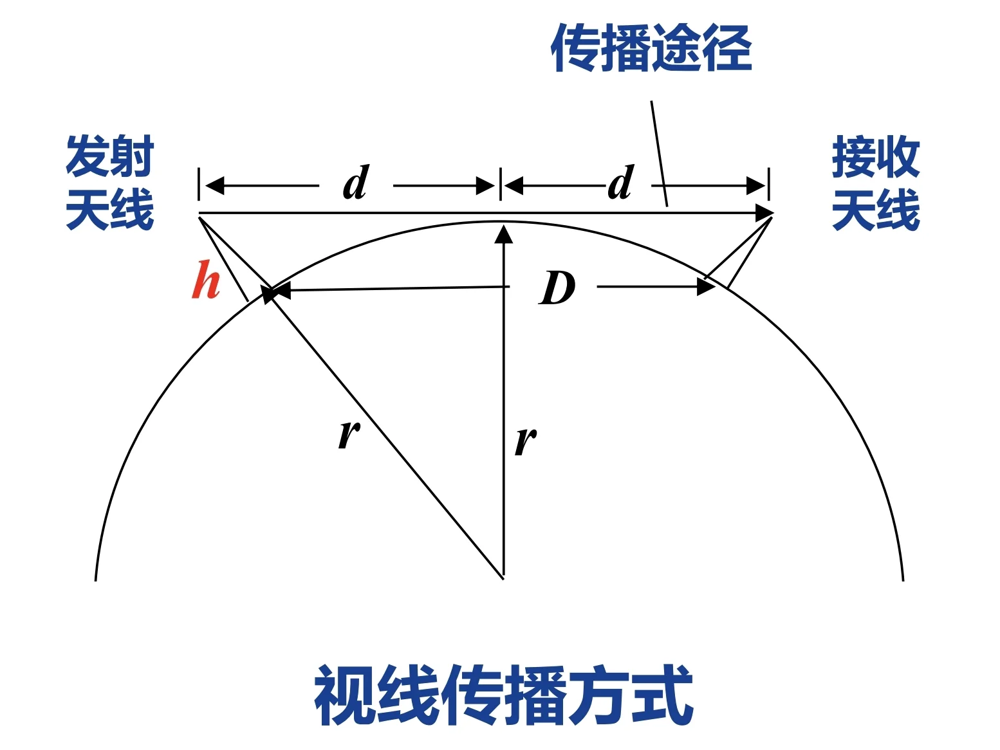
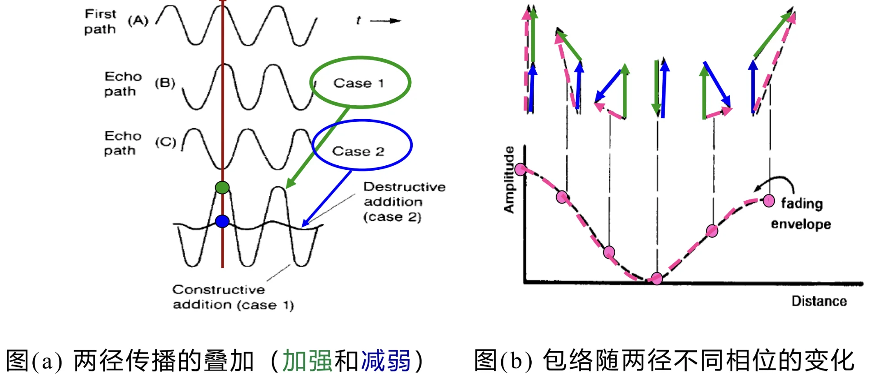
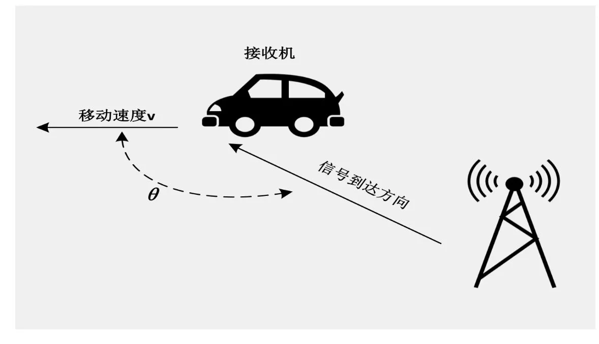

第九章：衰落信道¶
I. 信道基本概念¶
1.1 信道的定义与核心分类¶
核心定义：信道是电信号传输的媒质/通道，是数字通信系统中连接发射机与接收机的关键环节，其特性直接决定信号传输质量与系统传输极限。
按传输媒质核心分类
| 信道类型 | 核心定义 | 典型代表 | 信道属性 |
|---|---|---|---|
| 有线信道 | 以有形线缆为传输媒质 | 明线、对称电缆、同轴电缆、光纤 | 恒参信道 |
| 无线信道 | 以自由空间/大气层为传输媒质 | 地波、天波、视距中继、卫星中继、移动无线电信道 | 多为变参（时变）信道 |
补充分类（按信道参数时变特性）
- 恒参信道：信道参数基本不随时间变化，传输特性稳定
- 变参信道（时变信道）：信道参数随时间动态变化，是本章衰落信道的核心研究对象
1.2 有线信道（恒参信道）详解¶
本部分为恒参信道核心类型，是基带有线传输系统VLSI设计的信道基础。
- 明线
平行架设在地面杆路上的裸导线，是早期有线传输介质，目前已逐步被替代。 - 对称电缆（双绞线）
- 结构：由多对相互扭绞的绝缘导体组成，分为非屏蔽双绞线(UTP)和屏蔽双绞线(STP)
- 核心特点：扭绞结构减小线对间电磁干扰；UTP成本低、易安装，STP抗噪声能力更强
- 缺点：传输衰减大、传输距离短，存在邻道串话干扰
- 典型应用：电话线路、局域网综合布线
- 同轴电缆
- 结构：由内芯金属导线、绝缘层、金属编织网外导体、保护套同轴嵌套组成
- 核心优势：相比双绞线，抗电磁干扰能力更强、传输带宽更宽、速率更高
- 分类与应用：
- 基带同轴电缆：50Ω阻抗，用于数字基带传输，速率可达10Mb/s，传输距离小于几千米
- 宽带（射频）同轴电缆：75Ω阻抗，用于模拟信号传输，典型应用为有线电视(CATV)系统，传输距离可达几十千米
- 光纤
- 结构：核心由纤芯和包层组成，按折射率分为阶跃型、梯度型；按传输模式分为多模光纤、单模光纤
- 核心优势：传输带宽极宽、通信容量大；传输衰减小（<0.2 dB/km），无中继传输距离可达数百公里
- 局限性：材质易碎、接口成本高、安装与维护需专业技能
- 典型应用：长途电话网、有线电视网的主干传输线路
1.3 无线信道（变参信道）传播基础¶
1.3.1 地球大气层结构（无线传播的环境基础）¶
| 大气层分层 | 高度范围 | 对无线传播的核心作用 |
|---|---|---|
| 对流层 | 0~10 km | 主要影响视距、散射传播，是地面移动通信的核心传播区域 |
| 平流层 | 10~60 km | 可用于平流层通信中继 |
| 电离层 | 60~400 km | 可反射短波频段电磁波，是天波传播的核心媒介 |
1.3.2 无线电磁波的核心传播方式¶
| 传播方式 | 频率范围 | 核心特性 | 典型应用 |
|---|---|---|---|
| 地波 | < 2 MHz | 具备绕射能力，可沿地球表面传播 | AM广播 |
| 天波 | 2~30 MHz | 可被电离层反射，单跳传输距离最大可达4000 km | 远程短波通信 |
| 视线传播 | > 30 MHz | 直线传播，可穿透电离层，传输距离与天线高度强相关 | 卫星/外太空通信、超短波/微波通信、地面移动通信 |
视线传播关键公式：
收发天线架设高度为 \(h\) 时，最远通信距离 \(D\) 满足工程估算公式:
其中\(D\)为收发天线间距离，单位为km。

示例：收发天线高度均为40m时，最远通信距离可达44.7 km。
1.3.3 增大视线传播距离的工程途径¶
- 微波中继（微波接力）：单跳传输距离30~50km，远距离通信需搭建多个中继站；优势为容量大、投资少、维护方便、传输质量稳定，典型应用为远距离话音/电视信号传输。
- 卫星中继：采用地球静止轨道卫星（距地面36000公里）；优势为通信容量大、传输距离远、覆盖范围广；局限性为传输延时大、信号衰减大、造价高。
- 平流层通信：利用平流层平台实现中继传输。
1.4 信道噪声与加性干扰¶
核心定义：噪声是信道中独立于信号始终存在的无用电信号，又称加性干扰；会导致信号失真、码元错误，是限制系统传输速率的核心因素之一。
噪声分类
- 按噪声来源分类：人为噪声、自然噪声、内部噪声（如热噪声）
- 按噪声性质分类：脉冲噪声、窄带/单频噪声、起伏噪声（热噪声、散弹噪声、宇宙噪声）
重点：热噪声
- 来源：一切电阻性元器件中电子的热运动
- 频谱特性：均匀分布在 \(0~10^{12}\text{Hz}\) 频率范围内，属于高斯白噪声
电压有效值计算公式：
式中：\(k=1.38×10^{-23} J/K\)（玻尔兹曼常数），\(T\)为热力学温度，\(R\)为电阻阻值，\(B\)为系统带宽。
1.5 信道特性对信号传输的核心影响¶
1.5.1 恒参信道的影响¶
核心失真类型：
- 频率失真：由信道振幅-频率特性不良引起，会导致波形畸变，进而产生码间串扰，是基带数字传输的核心失真来源
- 相位失真：由信道相位-频率特性不良引起，对语音信号影响小，对数字信号传输影响极大，同样会引发码间串扰
- 其他失真：非线性失真、频率偏移、相位抖动等
解决方案：采用线性网络（均衡器）进行补偿，是基带接收机VLSI设计的核心模块之一。
1.5.2 变参信道的影响¶
变参信道是本章衰落信道的核心研究对象，其核心特性为：
- 信号衰减随时间动态变化
- 存在多径效应：信号经多条路径到达接收端，每条路径的时延、衰减均随时间变化
- 存在多普勒效应：收发端相对运动导致接收信号频率发生偏移
上述两个效应是无线信道衰落的核心根源，也是后续章节的核心内容。
II. 电磁波的传播¶
2.1 电磁波的核心物理关系¶
电磁波频率与波长的核心换算公式：
式中：
- \(f\)：电磁波频率，单位为赫兹(Hz)
- \(c\)：电磁波在自由空间的传播速度，恒定为\(3×10^8 m/s\)
- \(\lambda\)：电磁波波长，单位为米(m)
核心规律：频率越高，波长越短，电磁波的绕射能力越弱，直线传播特性越强。
2.2 无线电波频段与微波细分频段划分¶
2.2.1 无线电波全频段划分¶
| 频段名称 | 频段范围（含上限） | 对应波长 |
|---|---|---|
| 极低频(ELF) | 3Hz~30Hz | 极长波（100兆米~10兆米） |
| 超低频(SLF) | 30Hz~300Hz | 超长波（10兆米~1兆米） |
| 特低频(ULF) | 300Hz~3000Hz | 特长波（100万米~10万米） |
| 甚低频(VLF) | 3KHz~30KHz | 甚长波（10万米~1万米） |
| 低频(LF) | 30KHz~300KHz | 长波（10千米~1千米） |
| 中频(MF) | 300KHz~3MHz | 中波（1千米~100米） |
| 高频(HF) | 3MHz~30MHz | 短波（100米~10米） |
| 甚高频(VHF) | 30MHz~300MHz | 米波（10米~1米） |
| 超高频(UHF) | 300MHz~3GHz | 分米波（10分米~1分米） |
| 超高频(SHF) | 3GHz~30GHz | 厘米波（10厘米~1厘米） |
| 极高频(EHF) | 30GHz~300GHz | 毫米波（10毫米~1毫米） |
| 至高频 | 300GHz~3000GHz | 亚毫米波（丝米波） |
2.2.2 微波频段定义与细分¶
核心定义：频率 \(300M\text{Hz} \sim 3000G\text{Hz}\)、波长\(1\text{m}\sim 0.1\text{mm}\)的电磁波统称为微波，覆盖分米波、厘米波、毫米波、亚毫米波四个波段。
微波细分波段代号与参数（通信系统常用）：
| 波段代号 | 标称波长(cm) | 频率范围(GHz) | 波长范围(cm) |
|---|---|---|---|
| L | 22 | 1~2 | 30~15 |
| S | 10 | 2~4 | 15~7.5 |
| C | 5 | 4~8 | 7.5~3.75 |
| X | 3 | 8~12 | 3.75~2.5 |
| Ku | 2 | 12~18 | 2.5~1.67 |
| K | 1.25 | 18~27 | 1.67~1.11 |
| Ka | 0.80 | 27~40 | 1.11~0.75 |
| U | 0.60 | 40~60 | 0.75~0.5 |
| V | 0.40 | 60~80 | 0.5~0.375 |
| W | 0.30 | 80~100 | 0.375~0.3 |
2.3 电磁波的5种核心传播机制（多径效应的物理根源）¶
无线信道的多径衰落，本质是电磁波不同传播机制产生的多路信号叠加的结果，5种核心传播机制如下：
(1) 直射
- 定义：视距范围内无遮挡的直线传播，是无线信道的主径信号
- 发生条件：收发端之间无障碍物遮挡，满足视距传播条件
(2) 反射
- 定义：电磁波遇到比波长大得多的物体时发生的镜面反射
- 发生场景：地球表面、建筑物墙面、墙体表面等，是多径信号的核心来源之一
(3) 绕射
- 定义：收发端传输路径被尖利的障碍物边缘阻挡时，信号能量绕过障碍物继续传播的现象
- 核心作用：可实现非视距场景下的信号覆盖，是阴影区域信号的主要来源
(4) 散射
- 定义：电波传播遇到小于信号波长的障碍物或粗糙表面时，发生的漫反射现象
- 发生场景：空气中的尘埃、粗糙的墙面、植被等，会产生大量漫散射的多径子信号
(5) 透射
- 定义：电磁波照射到物体时，部分能量穿透物体继续传播的现象
- 典型场景：室内接收室外基站信号，信号穿透墙体、门窗等障碍物进入室内
核心结论：上述5种传播机制，使得无线接收机接收到的信号是直射、反射、绕射、散射、透射等多路信号的叠加，这就是多径效应的物理根源，也是后续多径衰落的核心成因。
III. 无线信道的多径效应¶
本章核心：多径效应是无线变参信道频率选择性衰落的物理根源，直接决定基带信号传输的码间串扰水平，是数字接收机均衡器、RAKE接收机等模块VLSI设计的核心理论依据。
3.1 衰落与多径衰落的核心定义¶
3.1.1 信道衰落的通用定义¶
信道的衰落（fading），是指无线通信信道特征的动态变化，引起接收机接收信号强度随时间、位置发生随机起伏的现象。
- 核心特点：信号幅度在短时间/短距离内发生急剧变化，是无线信道区别于有线恒参信道的核心特征。
- 两大核心成因：多径效应（本章核心）、多普勒效应（第四章核心）。
3.1.2 多径衰落的定义与产生机理¶
多径衰落：无线接收机接收到的来自不同传播路径的多路信号叠加后，合成信号的幅度随时间、位置发生剧烈起伏的现象。
核心成因
发射的电磁波经直射、反射、绕射、散射、透射等多种传播机制，形成多条传播路径的子信号；不同路径的子信号传播时延不同、相位不同，到达接收端时会发生相干叠加：
- 相长干涉：多路子信号相位同向，合成信号幅度增强，接收功率上升；
- 相消干涉：多路子信号相位反向，合成信号幅度抵消，接收功率急剧下降。
极简示例（两径传播模型）

仅考虑1条直射径+1条反射径：两条路径的信号相位差随传播距离变化时，合成信号包络会在最大值（两路同相）和最小值（两路反相）之间剧烈波动，直接形成包络衰落。
3.2 多径信道时域核心参数：时延扩展¶
时延扩展是对多径信道时域色散特性的统计量化描述，是衡量多径效应严重程度的核心指标，分为平均附加时延和均方根（RMS）时延扩展。
3.2.1 核心定义与计算公式¶
设多径信道中，第\(k\)条路径的信号时延为\(\tau_k\)，对应接收信号功率为\(P(\tau_k)\)，则：
(1) 平均附加时延
所有多径信号的时延加权平均值，权重为对应路径的信号功率：
(2) 均方根（RMS）时延扩展
简称时延扩展，用\(\sigma_\tau\)（或\(\tau_{RMS}\)）表示，是衡量多径信号时延离散程度的核心指标，也是后续计算相干带宽的核心参数：
3.2.2 实例完整计算¶
已知条件：
多径信道的4条路径参数如下表：
| 路径序号 | 时延\(\tau_k\)（\(\mu s\)） | 接收功率（dB） | 线性功率值\(P(\tau_k)\) |
|---|---|---|---|
| 1 | 0 | 0 dB | \(10^{0/10}=1\) |
| 2 | 5 | -10 dB | \(10^{-10/10}=0.1\) |
| 3 | 6 | -10 dB | \(10^{-10/10}=0.1\) |
| 4 | 15 | -20 dB | \(10^{-20/10}=0.01\) |
计算过程：
(1) 计算平均附加时延\(\overline{\tau}\)：
(2) 计算二阶矩\(\overline{\tau^2}\)：
(3) 计算RMS时延扩展\(\sigma_\tau\)：
3.2.3 典型场景的时延扩展参考值¶
不同传播环境的时延扩展差异极大，直接决定无线系统的符号速率上限：
| 场景 | 典型RMS时延扩展\(\sigma_\tau\) |
|---|---|
| 室内环境 | 150 ns ~ 1 \(\mu s\) |
| 城市市区 | 1 \(\mu s\) ~ 5 \(\mu s\) |
| 郊区环境 | 5 \(\mu s\) ~ 25 \(\mu s\) |
3.3 多径信道频域核心参数：相干带宽¶
相干带宽（\(B_c\)）是时延扩展在频域的对偶参数，描述多径信道的频率相关性，是划分平衰落/频率选择性衰落的核心依据。
3.3.1 核心定义¶
相干带宽是指：接收信号在该频带范围内，任意两个频率分量的相关系数不小于0.5；在相干带宽内，信号的不同频率分量具有很强的幅度相关性，会经历近似相同的衰落。
3.3.2 核心公式与时域-频域对偶关系¶
相干带宽与时延扩展呈反比关系，工程上常用的估算公式为：
时域-频域对偶核心规律：
| 时域参数 | 频域参数 | 核心对应关系 |
|---|---|---|
| RMS时延扩展\(\sigma_\tau\) | 相干带宽\(B_c\) | \(\sigma_\tau\)越大，多径时延越分散，\(B_c\)越小，信道频率选择性越强 |
| 时域色散 | 频域选择性衰落 | 多径效应引发时域码间串扰，等价于频域频率选择性衰落 |
3.3.3 课件实例计算¶
沿用3.2.2节的实例，\(\sigma_\tau=2.42 \ \mu s\)，则信道相干带宽为：
3.4 多径衰落的两大类型：平衰落 vs 频率选择性衰落¶
根据传输信号带宽与信道相干带宽的相对大小，可将多径衰落分为平衰落（平坦衰落）和频率选择性衰落两类，二者的判定条件、信道特性、系统影响完全不同。
3.4.1 核心判定规则与特性对比¶
| 特性维度 | 平衰落（平坦衰落） | 频率选择性衰落 |
|---|---|---|
| 核心判定条件 | 信号带宽\(B_s\) < 信道相干带宽\(B_c\) | 信号带宽\(B_s\) > 信道相干带宽\(B_c\) |
| 时域对应条件 | 码元周期\(T_s\) > 信道最大多径时延差 | 码元周期\(T_s\) < 信道最大多径时延差 |
| 信道特性 | 信号所有频率分量经历相同的衰落，幅度同比例起伏，信号频谱形状保持不变 | 信号不同频率分量经历不同的衰落，部分频率分量被增强，部分被深度衰减，信号频谱形状发生畸变 |
| 对数字信号的核心影响 | 仅信号整体幅度衰减，无明显码间串扰 | 多径信号跨码元叠加，产生严重码间串扰，是基带传输误码的核心来源 |
| 典型场景 | 窄带通信系统（如语音对讲机、低速物联网） | 宽带通信系统（如4G/5G、高速数字传输） |
3.4.2 实例分析¶
已知条件：
- 信道相干带宽\(B_c \approx 82.6 \ kHz\)（3.3.3节计算结果）
- 调制方式：QPSK（信号带宽\(B_s\)等于符号速率\(R_s\)）
- 两种符号速率场景：\(R_{s1}=10 \ k\)波特，\(R_{s2}=100 \ k\)波特
判定过程：
场景1：\(R_{s1}=10 \ k\)波特，信号带宽\(B_{s1}=10 \ kHz\)
因\(B_{s1}=10 \ kHz < B_c=82.6 \ kHz\)，该信道为平衰落信道。
场景2：\(R_{s2}=100 \ k\)波特，信号带宽\(B_{s2}=100 \ kHz\)
因\(B_{s2}=100 \ kHz > B_c=82.6 \ kHz\)，该信道为频率选择性衰落信道。
3.5 多径效应对数字通信系统的工程影响¶
- 码间串扰的核心根源：频率选择性衰落会导致前一个码元的多径信号叠加到当前码元上，产生严重码间串扰，直接提升系统误码率；需在基带接收机中设计均衡器模块消除，是数字通信VLSI设计的核心模块之一。
- 误码率地板效应：当多径效应严重时，即使提升发射信号的信噪比，也无法将误码率降低到系统要求的阈值以下，形成误码率地板，限制了系统的最高传输速率。
IV. 无线信道的多普勒效应¶
本章核心：多普勒效应是无线信道时变特性（时间选择性衰落）的物理根源，直接决定高速移动场景下的载波同步、解调性能，是基带接收机中频偏估计、载波同步、信道跟踪模块VLSI设计的核心理论依据，与你已学的调制解调、基带同步技术直接相关。
4.1 多普勒效应的核心原理与无线场景适配¶
4.1.1 通用多普勒效应定义¶
多普勒效应由奥地利物理学家多普勒于1842年提出，核心物理规律为：波源与观测者存在相对运动时，观测者接收到的波的波长、频率会发生偏移。
相对运动规律：
- 波源向观测者运动时，波长被压缩、频率升高；
- 波源远离观测者运动时，波长被拉伸、频率降低。
4.1.2 无线通信场景的适配¶
在无线数字通信系统中，多普勒效应的核心表现为：发射机与接收机的相对运动，导致接收端的载波频率发生偏移（多普勒频移），是高速移动场景下信号失真、误码率上升的核心原因。
典型场景：高铁移动通信、车载通信、高速移动的手持终端，均会产生显著的多普勒频移。
4.2 多普勒频移核心公式、影响因素与实例计算¶
多普勒频移是量化多普勒效应严重程度的核心参数，是后续计算相干时间、判定快/慢衰落的基础。
4.2.1 核心定义与计算公式¶
(1) 多普勒频移核心公式

设发射载波频率为\(f_t\)，接收载波频率为\(f_r\)，多普勒频移为\(f_d\)，则：
式中各参数定义：
- \(v\)：收发端的相对移动速度，单位为\(m/s\)；
- \(\lambda\)：载波波长，单位为\(m\)，满足\(\lambda = \frac{c}{f_t}\)，\(c=3×10^8 m/s\)为光速；
- \(\theta\)：电磁波到达方向与接收机移动方向的夹角；
- \(\cos\theta\)：速度方向在电磁波传播方向上的投影系数。
(2) 核心影响规律
夹角\(\theta\)的影响：
-
当\(\theta=0^\circ\)（接收机正对发射机运动），\(\cos\theta=1\)，多普勒频移达到最大值\(f_{d,max}=\frac{v}{\lambda}\)；
-
当\(\theta=90^\circ\)（接收机移动方向与电磁波到达方向垂直），\(\cos\theta=0\)，多普勒频移为0；
-
当\(\theta=180^\circ\)（接收机远离发射机运动），\(\cos\theta=-1\)，多普勒频移达到负向最大值\(f_{d,min}=-\frac{v}{\lambda}\)。
载波频率的影响：
载波频率越高（波长越短），相同移动速度下多普勒频移越大；例如5G毫米波频段（28GHz/39GHz）的多普勒频移，远大于2G/3G的1.9GHz频段。
移动速度的影响：
相对移动速度越快，多普勒频移越大，信道时变特性越显著。
4.2.2 实例计算¶
已知条件：
- 载波频率\(f_c=1900 MHz\)，对应波长\(\lambda=\frac{3×10^8}{1.9×10^9}≈0.1579 m\)；
- 高铁时速\(v=350 km/h\)，换算为国际单位：\(v=350÷3.6≈97.22 m/s\)；
- 高铁正对基站运动，即\(\theta=0^\circ\)，\(\cos\theta=1\)。
多普勒频移计算：
核心结论：350km/h的高铁在1.9GHz频段下，会产生616Hz的载波频偏，若不做校正，会直接导致QPSK等调制方式的解调完全失效。
4.3 时变信道时域核心参数：相干时间¶
相干时间 \(T_c\) 是多普勒频移在时域的对偶参数，描述无线信道的时变速率，是划分慢衰落/快衰落的核心依据，与第三章的相干带宽形成完整的时频域对偶体系。
4.3.1 核心定义¶
相干时间是指：在此时间间隔内，对接收信号复包络的任意两个时刻采样值，相关系数不小于0.5；在相干时间内，信道的传输特性近似保持不变，接收信号幅值具有强相关性。
核心物理意义：相干时间是信道特性保持稳定的最大时间窗口，度量了信道的时变快慢程度。
4.3.2 核心公式与对偶关系¶
相干时间与最大多普勒频移呈反比关系，工程上常用的估算公式为：
时域-频域对偶核心规律（与第三章对应）：
| 频域参数 | 时域对偶参数 | 核心对应关系 |
|---|---|---|
| 最大多普勒频移\(f_d\) | 相干时间\(T_c\) | \(f_d\)越大，多普勒效应越显著，\(T_c\)越小，信道时变越快 |
| 频率选择性衰落 | 时间选择性衰落 | 多普勒效应引发频域载波偏移，等价于时域信道的快速时变 |
4.3.3 实例计算¶
沿用4.2.2节的高铁场景，\(f_d=616 Hz\)，则信道相干时间为：
行人场景：行走速度\(v=4 km/h≈1.11 m/s\)，对应\(f_d≈7 Hz\)，则相干时间为：
4.4 时变衰落的两大类型：慢衰落 vs 快衰落¶
根据信道相干时间\(T_c\)与传输信号的码元周期\(T_s\)的相对大小，可将时变衰落分为慢衰落和快衰落两类，二者的判定条件、信道特性、系统设计要求完全不同，与第三章的平衰落/频率选择性衰落形成二维衰落分类体系。
4.4.1 核心判定规则与特性对比¶
| 特性维度 | 慢衰落 | 快衰落 |
|---|---|---|
| 核心判定条件 | 相干时间\(T_c\) ≥ 码元周期\(T_s\) | 相干时间\(T_c\) < 码元周期\(T_s\) |
| 频域对应条件 | 最大多普勒频移\(f_d\) < 符号速率\(R_s\) | 最大多普勒频移\(f_d\) > 符号速率\(R_s\) |
| 信道特性 | 信道特性在多个连续码元周期内保持稳定，仅随时间缓慢变化 | 信道特性在单个码元周期内就会发生多次变化，信道时变极快 |
| 对数字信号的核心影响 | 仅导致信号整体幅度的慢起伏，对解调影响小，仅需慢速信道跟踪 | 码元内信道特性突变，载波频偏严重，解调相位跟踪失效，产生严重误码 |
| 误码率核心来源 | 信噪比损失 | 信道时变引发的相位失真、载波失步 |
| 典型场景 | 低速移动（行人步行）、静态WiFi、固定无线通信 | 高铁通信、车载高速通信、低符号率窄带系统 |
4.4.2 课件实例完整判定分析¶
已知条件：
- GSM系统，载频\(f_c=1900 MHz\)，码元速率\(R_s=1 k\)波特，对应码元周期\(T_s=\frac{1}{R_s}=1 ms\)；
- 两种移动场景：高铁350km/h（\(f_d=616 Hz\)，\(T_c≈0.8 ms\)）、行人4km/h（\(f_d≈7 Hz\)，\(T_c≈71.4 ms\)）。
判定过程：
- 高铁场景：\(T_c≈0.8 ms < T_s=1 ms\)，该信道为快衰落信道；
- 行人场景：\(T_c≈71.4 ms > T_s=1 ms\)，该信道为慢衰落信道。
4.5 多普勒效应的系统影响与工程解决方案¶
4.5.1 对数字通信系统的核心影响¶
- 误码率显著上升：移动速度越快，多普勒频移越大，载波同步误差越大，系统误码率越高。
- 载波同步失效：大频偏会导致接收机本地载波与接收载波失步，直接造成PSK/QAM等相位调制方式的解调完全错误，是高速移动场景下通信中断的核心原因。
- 信道估计精度下降：快衰落场景下，信道特性在码元内快速变化，基于导频的信道估计结果无法匹配当前码元的信道状态，导致均衡、解调性能恶化。
4.5.2 工程解决方案（课件核心方案）¶
针对多普勒频移与快衰落的核心解决方案是基于导频的频偏估计与校正，也是当前无线通信系统的主流实现方案，适配VLSI硬件实现。
核心原理：在发送的数据帧中插入收发两端均已知的导频符号，接收端利用导频符号估计出信道的多普勒频偏，再通过载波校正模块消除频偏，完成载波同步。
实现流程：
- 发送端：在数据帧中按固定间隔插入导频符号，形成「导频+数据」的帧结构；
- 接收端：先基于导频符号完成频偏估计，计算出当前信道的多普勒频偏值；
- 频偏校正：通过数控振荡器（NCO）、相位旋转器等硬件模块，消除接收信号中的频偏，再进行后续的解调、译码操作。
补充抗衰落方案：针对快衰落场景，还可采用分集接收、符号内多次信道采样、自适应调制编码等技术，进一步提升系统性能。
V. 本章核心知识点汇总¶
5.1 多径衰落核心公式与判定规则速记¶
(1) 核心参数： RMS时延扩展\(\sigma_\tau\) ↔ 相干带宽\(B_c≈\frac{1}{5\sigma_\tau}\)
(2) 衰落判定：
- 平衰落：信号带宽\(B_s < B_c\)
- 频率选择性衰落：信号带宽\(B_s > B_c\)
(3) 核心影响： 频率选择性衰落是码间串扰的根源，需均衡器消除。
5.2 多普勒效应核心公式与判定规则速记¶
(1) 核心参数： 多普勒频移\(f_d=\frac{v}{\lambda}\cos\theta\) ↔ 相干时间\(T_c≈\frac{0.5}{f_d}\)
(2) 衰落判定：
- 慢衰落：相干时间\(T_c ≥ 码元周期T_s\)
- 快衰落：相干时间\(T_c < 码元周期T_s\)
(3) 核心影响： 快衰落导致载波失步、误码率上升，需导频+频偏校正解决。